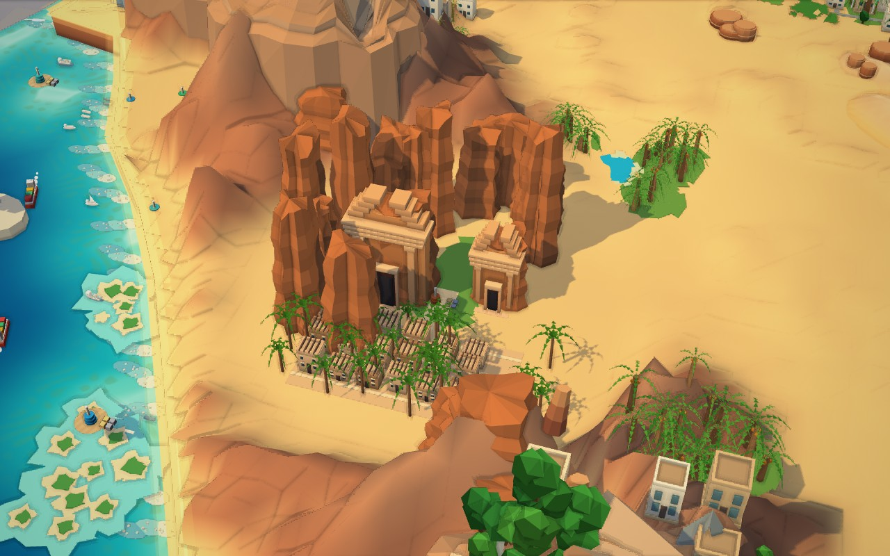
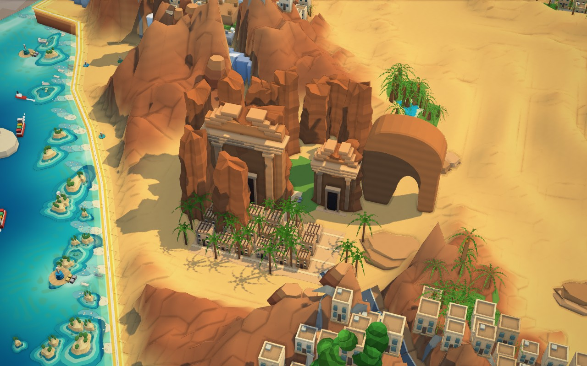
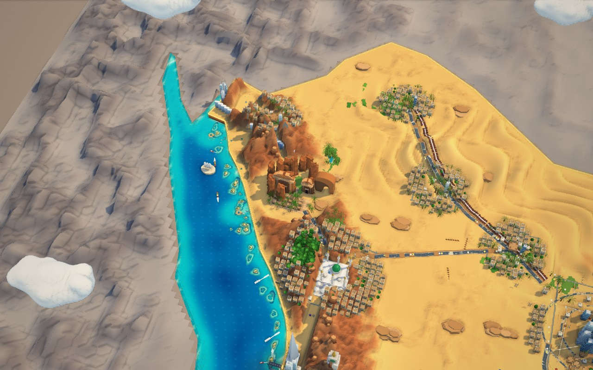
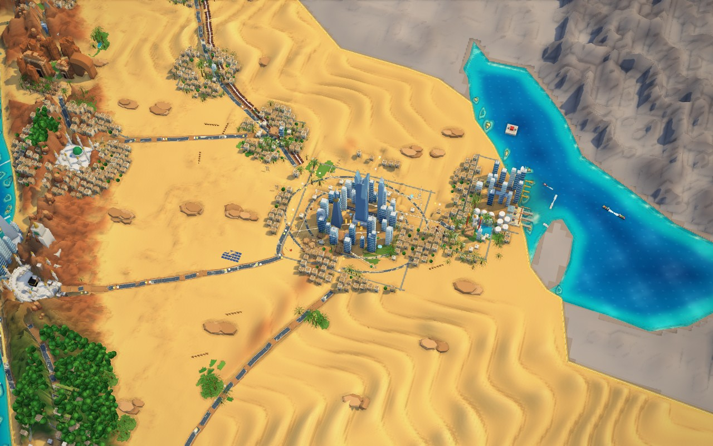

Vision Nexus 2030 · V28A living country, in the game.
These are actual Three.js game captures. Move the slider to compare V28 and V27 from the same camera, at High quality and fixed daylight. The concept artwork is not used as a background.
V28V27
Open full V28 country capture · Changes, verification and measured rendering costs
AlUla, preserved in 3D

V27 — previous heritage scene
V28 — larger carved facades and an open Elephant Rock archCountry composition and controls

Northwest at national detail level
Expanded Riyadh district and skylineThe country opens without labels or menus. Move to the bottom edge or tap to reveal its controls. Esc or H restores the game interface. The six regional views, projects, simulation and construction tools remain accessible.